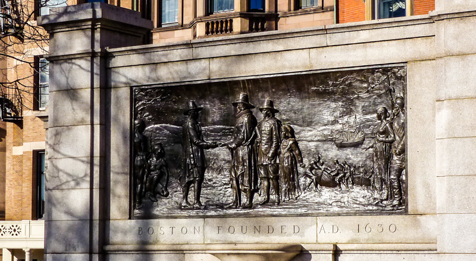
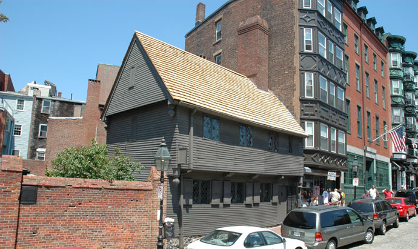
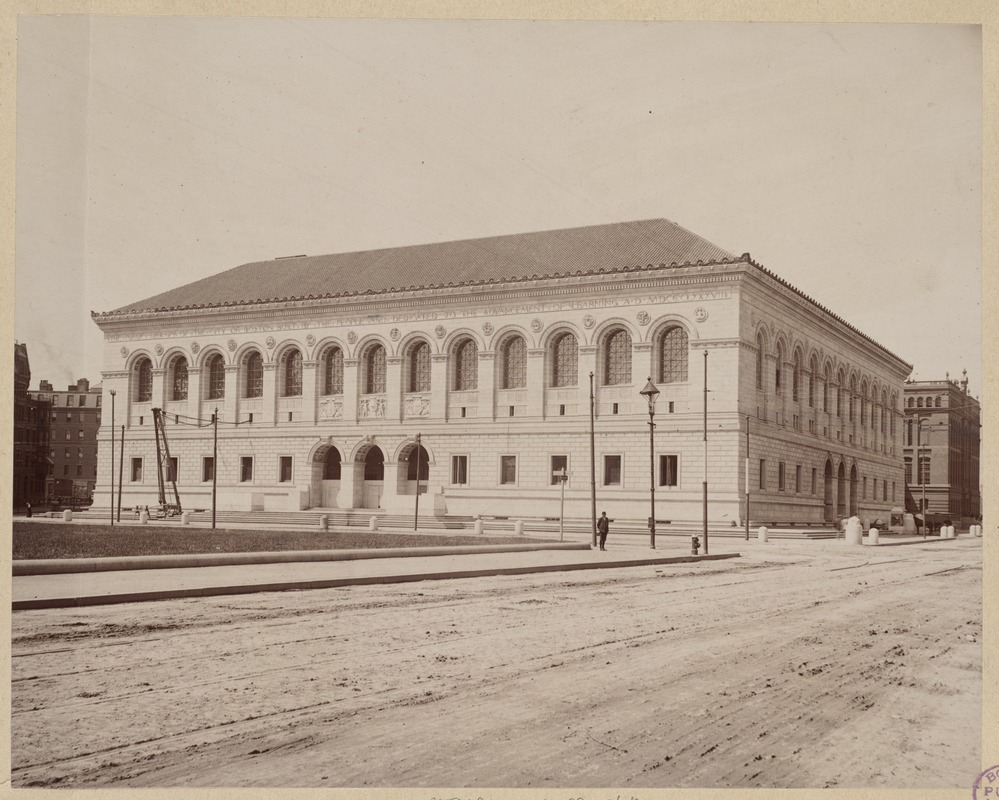
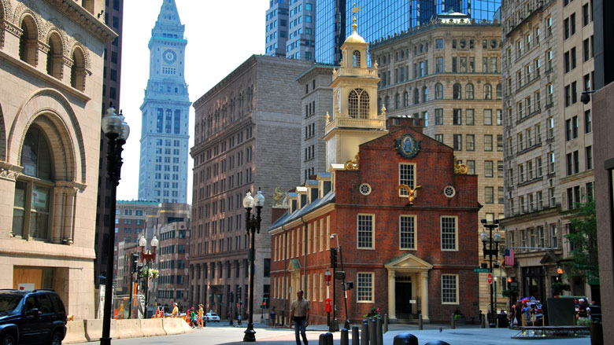
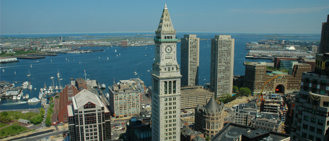

Boston City
Where History Comes Alive
☰ Menu
Visit
Departments
Services
Pay Bills
Meetings
Help

Founders Memorial
Faneuil Hall Illustration

Paul Revere House

Historic Boston Public Library

Old State House

Boston Cityscape
Places to stay
Walk the Red Line
Pass to the City
Fine Dining